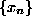
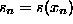
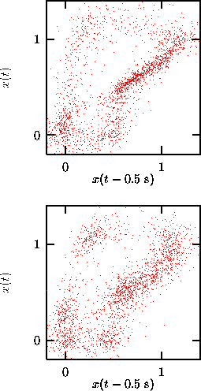

Very few real time series which are suspected to show nonlinearity follow a
Gaussian single time distribution. Non-Gaussianity is the simplest kind of
nonlinear signature but it may have a trivial reason: The data may have been
distorted in the measurement process. Thus a possible null hypothesis would be
that there is a stationary Gaussian linear stochastic process that generates a
sequence , but the actual observations are  where
 is a monotonic function. Constrained realizations of this null
hypothesis would require the generation of random sequences with the same power
spectrum (fully specifying the linear process) and the same single time
distribution (specifying the effect of the measurement function) as the
observed data. The Amplitude Adjusted Fourier Transform
(AAFT) method proposed in [82] attempts to invert the measurement
function
is a monotonic function. Constrained realizations of this null
hypothesis would require the generation of random sequences with the same power
spectrum (fully specifying the linear process) and the same single time
distribution (specifying the effect of the measurement function) as the
observed data. The Amplitude Adjusted Fourier Transform
(AAFT) method proposed in [82] attempts to invert the measurement
function  by rescaling the data to a Gaussian distribution. Then
the Fourier phases are randomized and the rescaling is inverted. As discussed
in [83], this procedure is biased towards a flatter spectrum since
the inverse of
by rescaling the data to a Gaussian distribution. Then
the Fourier phases are randomized and the rescaling is inverted. As discussed
in [83], this procedure is biased towards a flatter spectrum since
the inverse of  is not available exactly. In the same reference,
a scheme is introduced that removes this bias by iteratively adjusting the
spectrum and the distribution of the surrogates. Alternatingly, the surrogates
are rescaled to the exact values taken by the data and then the Fourier
transform is brought to the exact amplitudes obtained from the data.
The discrepancy between both steps either converges to zero with the number
of iterations or to a finite inaccuracy which decreases with the length of the
time series. The program surrogates performs iterations until no further
improvement can be made. The last two stages are returned, one having the exact
Fourier amplitudes and one taking on the same values as the data. For not too
exotic data these two versions should be almost identical. The relative
discrepancy is also printed.
is not available exactly. In the same reference,
a scheme is introduced that removes this bias by iteratively adjusting the
spectrum and the distribution of the surrogates. Alternatingly, the surrogates
are rescaled to the exact values taken by the data and then the Fourier
transform is brought to the exact amplitudes obtained from the data.
The discrepancy between both steps either converges to zero with the number
of iterations or to a finite inaccuracy which decreases with the length of the
time series. The program surrogates performs iterations until no further
improvement can be made. The last two stages are returned, one having the exact
Fourier amplitudes and one taking on the same values as the data. For not too
exotic data these two versions should be almost identical. The relative
discrepancy is also printed.

Figure: Upper: The human breath rate data from Fig.. Lower: the noise component extracted by the noise reduction scheme has been randomized in order to destroy correlations with the signal. The result appears slightly but significantly less structured than the original.
In Fig.  we used this procedure to assess the hypothesis that
the noise reduction on the breath data reported in Fig.
we used this procedure to assess the hypothesis that
the noise reduction on the breath data reported in Fig.  removed
an additive noise component which was independent of the signal. If the
hypothesis were true, we could equally well add back on the noise sequence
or a randomized version of it which lacks any correlations to the signal.
In the upper panel of Fig.
removed
an additive noise component which was independent of the signal. If the
hypothesis were true, we could equally well add back on the noise sequence
or a randomized version of it which lacks any correlations to the signal.
In the upper panel of Fig.  we show the original data. In the
lower panel we took the noise reduced version (c.f. Fig.
we show the original data. In the
lower panel we took the noise reduced version (c.f. Fig.  , bottom)
and added a surrogate of the supposed noise sequence. The result is similar but
still significantly different from the original to make the additivity
assumption implausible.
, bottom)
and added a surrogate of the supposed noise sequence. The result is similar but
still significantly different from the original to make the additivity
assumption implausible.
Fourier based randomization schemes suffer from some caveats due to the the inherent assumption that the data constitutes one period of a periodic signal, which is not what we really expect. The possible artefacts are discussed for example in [84] and can, in summary, lead to spurious rejection of the null hypothesis. One precaution that should be taken when using surrogates is to make sure that the beginning and the end of the data approximately match in value and phase. Then, the periodicity assumption is not too far wrong and harmless. Usually, this amounts to the loss of a few points of the series. One should note, however, that the routine may truncate the data by a few points itself in order to be able to perform a fast Fourier transform which requires the number of points to be factorizable by small prime factors.